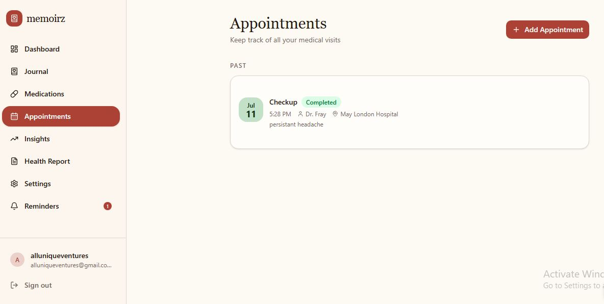
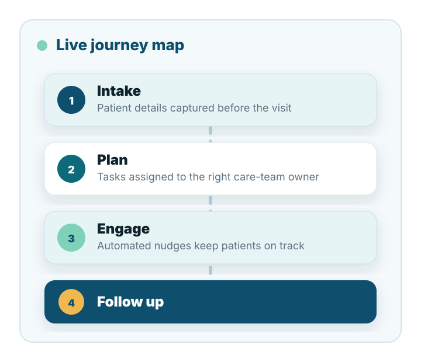
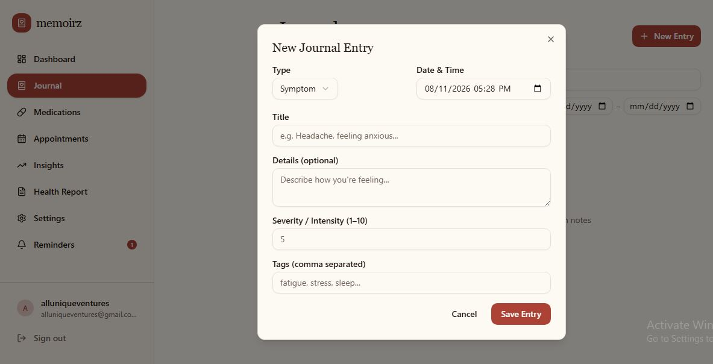
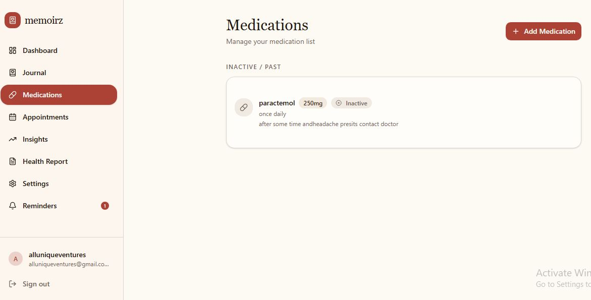
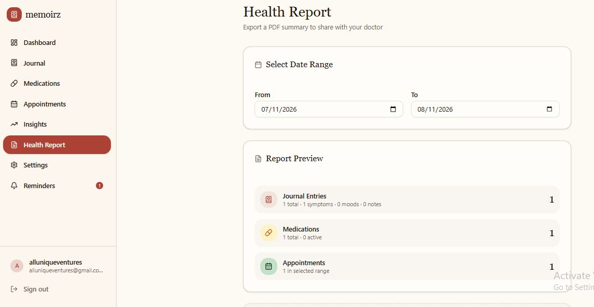

Journey Builder
Create reusable care pathways for onboarding, chronic care, post-discharge follow-up, behavioral health, maternal health, or specialty programs.
Healthcare Journey Automation

Memoirz gives care teams one organized workflow for patient intake, reminders, care-plan steps, follow-up, documentation prompts, and operational handoffs.

Visual Story
These images can be used to show product moments, brand visuals, or a more human side of the care journey. The layout keeps them structured and balanced across screen sizes.



Platform
Memoirz connects patient information, care tasks, communication triggers, operational rules, and outcomes data so healthcare teams can coordinate care without managing every step manually.
Create reusable care pathways for onboarding, chronic care, post-discharge follow-up, behavioral health, maternal health, or specialty programs.

Trigger reminders, check-ins, staff tasks, escalation alerts, and next-step instructions based on timing, patient response, or care status.

Give nurses, coordinators, clinicians, and operations teams one shared view of what happened, what is pending, and what needs attention.

Measure completion rates, response delays, missed steps, escalations, and journey performance across teams and patient groups.
Product Features
AI Development
Memoirz helps healthcare organizations design AI workflows that support staff, reduce repetitive work, and keep human oversight at the center of care delivery.
Map intake, outreach, follow-up, and escalation processes into supervised AI-assisted workflows that fit existing care operations.
Build task-focused agents for reminders, form completion, care-plan nudges, staff handoffs, and journey status updates.
Connect AI workflows with patient information, journey rules, reporting dashboards, and operational systems used by care teams.
Add review points, escalation rules, audit visibility, and permission boundaries so AI supports decisions without replacing clinical judgment.
Memoirz and Care Automation
Memoirz and healthcare journey automation intersect in two distinct ways: how literary medical memoirs document the human element of care, and how patient journey automation uses AI to streamline the clinical process.
Stories from patients, families, clinicians, and caregivers reveal what care feels like beyond forms, appointments, and dashboards. They show fear, recovery, trust, confusion, dignity, and the emotional weight of navigating healthcare.
Patient journey automation organizes intake, reminders, follow-up, escalation, and care-team tasks so organizations can reduce delays, standardize steps, and support patients through complex care pathways.
The platform is designed to respect the personal story behind every patient journey while helping healthcare teams automate the repeated operational steps that often make care harder to access.
Care Journeys
Collect forms, confirm eligibility, gather history, explain expectations, and prepare the care team before the patient arrives.
Coordinate tasks, surface missing information, document care-plan steps, and keep everyone aligned on the next action.
Automate education, medication reminders, symptom check-ins, referrals, scheduling prompts, and escalation alerts.
Outcomes
Memoirz helps organizations reduce administrative burden, improve patient engagement, standardize service delivery, and create clearer visibility across every stage of care.
Build With Memoirz
Tell us what your organization wants to simplify, automate, or measure.